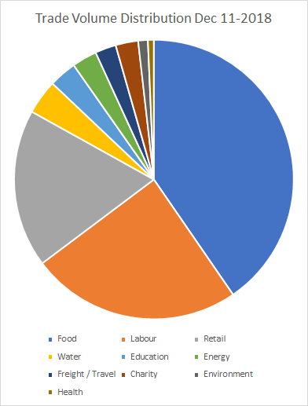

Proof of Impact

In 2010 - 9 years ago - we started printing paper notes and giving them out to community members as mutual-credit vouchers (community currencies) for each other’s goods and services. There isn't enough national currency in these underserved communities, yet there is an abundance of goods and services on offer – with no money to trade it with.
With these paper vouchers, we saw trade happening in economic downturns where normally trade would be stagnating. We saw groups trading in cycles with each other and developing trust and market resilience.
....But we really had no idea exactly how much trade of community currencies there was and hence little clue as to the actual amount of underutilized capacity in those communities. With paper bills we would attempt to track serial numbers to understand the circulation – but the task was far too tough … until now.
Now community currencies are created cryptographically as tokens on the POA.network blockchain with the inherent ability to be tradable to other tokens via the Bancor Protocol. We can now issue these Liquid Community Currencies at no cost of printing and are able to measure their impacts through every single transaction.
With this data we can now tell how much trade is possible in the absence or lack of National Currency and we’re just seeing the tip of the iceberg of what human potential could look like if not constrained by a scarce medium of exchange.
In the last month we’ve just begun digitizing our paper based community currencies and created an initial 382 blockchain wallets among school teachers, fruit sellers, salons, boda boda operators and many more (growing at roughly 100 wallets a week).

How it works: Each user receives roughly $4USD of tokens with a soft-pegged value to the National currency – but no exchangeability whatsoever for National currency. The tokens are exchangable solely by the goods and services of the community members – like a circulating communal voucher. People trade their tokens on feature phones - with no internet needed (via our own open source USSD systems).
Beyond our usual physical surveys; to verify impacts based on blockchain data, each transaction is matched to the goods and services being offered on that wallet ID then aggregated to for a confidence score to verify impacts on various Sustainable Development Goals such as education and food security.
We are also implementing a negative interest rate (demurrage) that causes the tokens to migrate over time to a community fund that is redistributed as a basic income.
These community currencies are generally not financially preferable to National Currency because of their limited acceptability and unconvertability to fiat - yet because Kenyan Shillings are in such chronic short supply; over the last month we have seen transactions totaling $9,652 USD in value among 5 communities in disperse informal settlements (slums) across Kenya. This is amazing and not what you will find in typical economics textbooks.
What does this mean?
These informal settlements are very large (over 100k people minimally) and we haven’t even reached 1% of one community yet - but let’s say we had (and will very soon); then at full capacity, one community, in one month, should be able to increase their trade by more than $200,000. USD!

If after only a month of pilot trading, $10k of circulation can be seen. It means an end to poverty, as we know it, is possible through the redesign of our economic systems. Money, for lack of a better word, can be created by people in underserved and marginalized areas, backed by their own goods and services.
To put it in perspective a transaction of these Liquid Community Currencies valuing only:
- USD $0.20, is a meal being eaten, when before someone was going hungry.
- USD $3.00 is enough to pay for a term of school tuition fees.
By simply providing a means of exchange (liquidity for underutilized capacity), we can enable vast supply and vast demand to meet and unlock trade that provides food security and education.
"If this doesn’t show that poverty is a systemic symptom of a poor monetary system – I don’t know what could." - Prof. Ester Barinaga Lund University
This data is available on the blockchain along with surveys for each user next year for researchers. While this work has just begun, with enough support, we expect it to reach a phase transition next year as organic growth begins to spread the concept farther and farther.
As a non-profit foundation we are seeking support on all sides to make sure these seeds of new economies grow, and communities worldwide can duplicate and expand on this work. While we are standing on the shoulders of giants of generosity to get this far, we still very much need support.
Please support Grassroots Economics Foundation.
Beyond making a donation – no matter how small – please also consider supporting in other ways:
- We need all manner of volunteers, programmers, community managers, tech support, data analysts, field support, educational videos and materials and so on.
- Contact us..
Here is to a wonderful 2019!
#proofofimpact #blockchain #communitycurrency #donate #volunteer